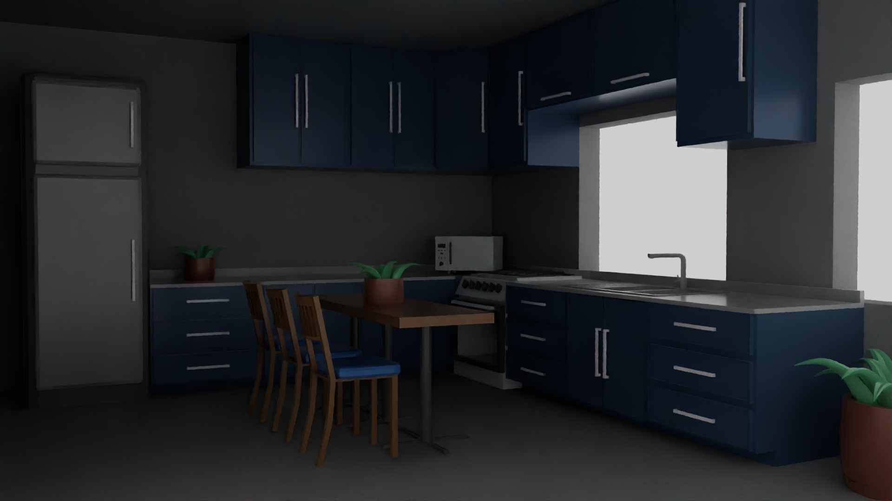
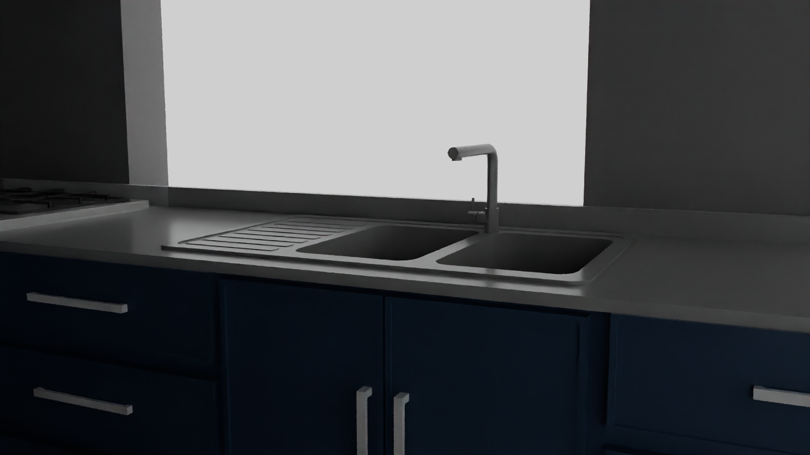
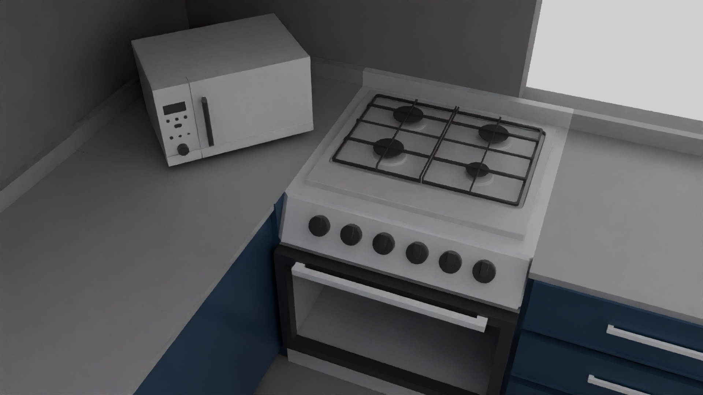
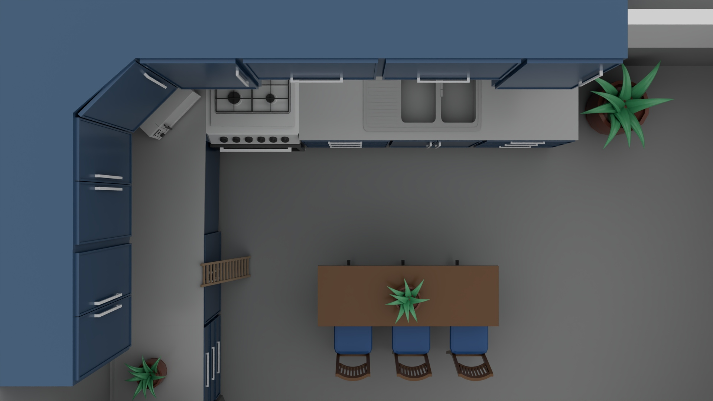
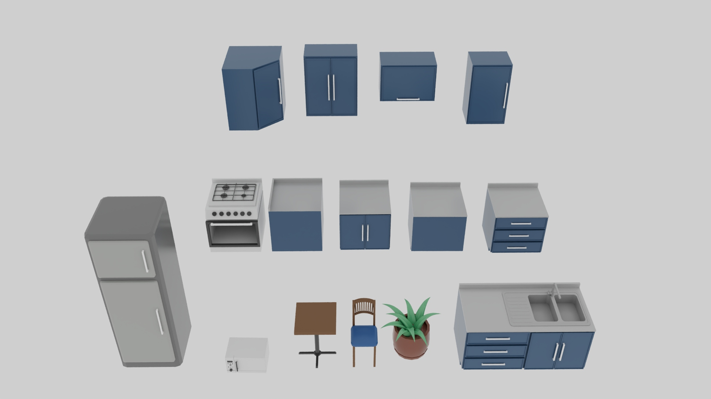
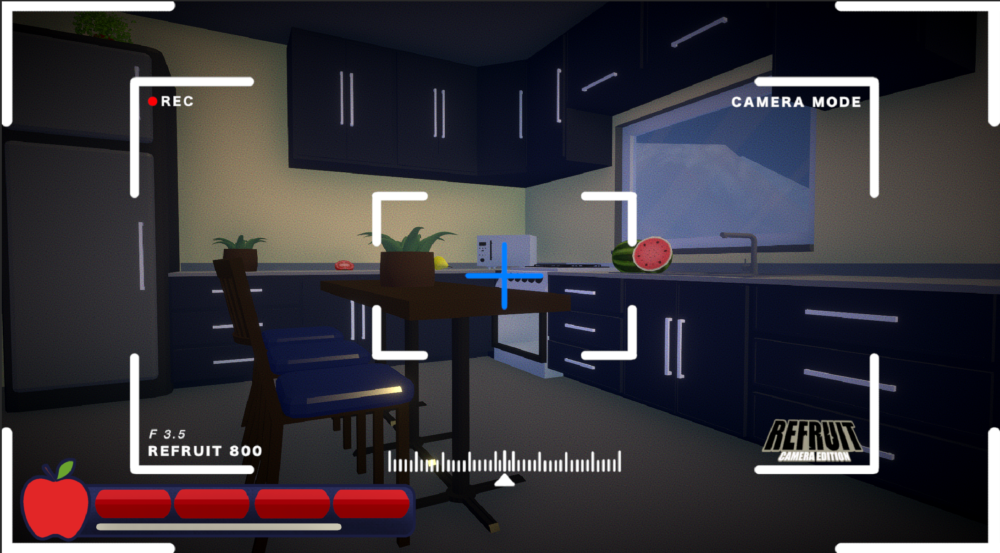

ReFruit: Kitchen Room
In a Game Jam called, "ReFruit: Camera Edition". As a Game Artist, I have created a kitchen room, working together with a Level Designer, J0ules1337 to match with the theme: "Fruit".

Full View

Full View in a room

Focus View: Sink

Focus View: Stove / Microwave

Top View

Objects
In - Game Work

In - Game Work